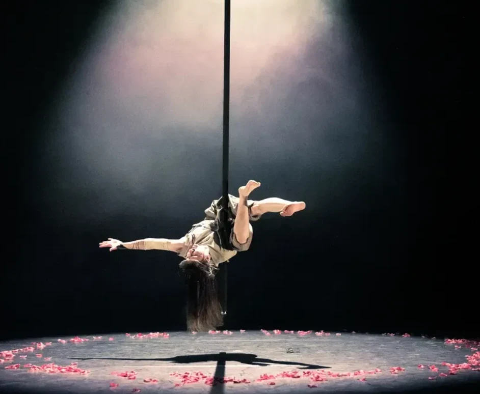
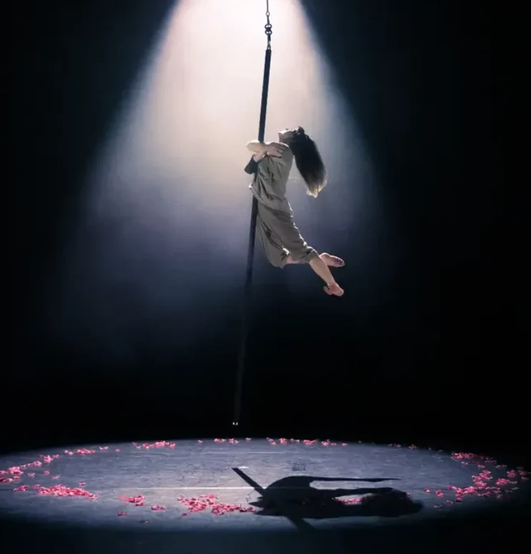
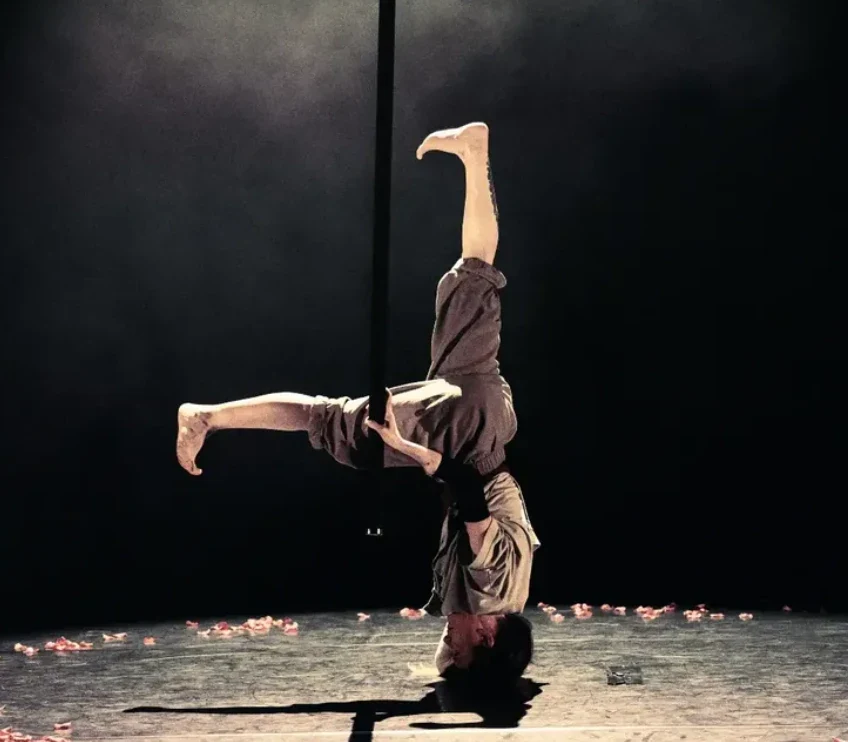
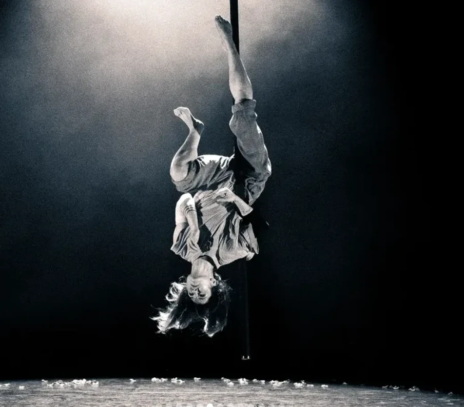

pitch 06 · under the canvas · beside a tree
A circus tent by a tree
The Aerial Arbour
Rowena’s: a round circus tent with a silver birch growing up through the middle of it, and everything hanging off the tree.
The tree was here first, so the tent was pitched round it, and the tree holds the canvas up: it is a silver birch, white bark marked with dark lines, and every seam of the canvas runs down from the top of it to the wall, in stripes of deep purple, teal and dark pink. Everything in here hangs off its branches. Fairy lights run down every seam, so the whole roof is points of silver light, and the colour is all in the cloth.
Whose this is
This is Rowena’s. A circus tent of Rowena’s own, pitched on the campgrounds beside a tree, with the street still in reach down the path.
Rowena is @untypical_wing on Instagram.
Hanging off the tree
- The aerial silks. Two long lengths of cloth, one dark pink and one teal, from the highest branch down to the mat, to climb, wrap yourself in and hang in.
- The aerial hoop. A steel ring wrapped in pink tape, on a rope from the branch on the right. It is also called a lyra.
- The rope. One rope with a knot at the foot, for climbing.
- The rope ladder. Off the long branch on the left, a rung at a time.
- The aerial pole. A steel pole hung on a swivel from the far branch, so it turns as you climb it.
- The tightrope. A wire from a little platform on the trunk out to a post by the wall, low over the rug.
There is a crash mat under everything that hangs. There is no ring and no seats round one either: nobody is watching, and nothing in here is a show.
On the floor
The floor is one round rug, the shape of the tent. A hammock is slung between two of the poles in the wall, and there are beanbags on the rug, dark pink, purple and teal, for chilling out on after the silks, or instead of them.
The fairy lights
A string of them runs down every seam of the canvas, from the top of the tree to the wall, small and silver and steady. They do not twinkle at any setting. At MAX GLITTER the silks, the hoop and the pole sway a little, as if somebody has just let go of them, and at every other setting they hang still.
Down the pebble paths
The tent is pitched beside a tree at the far side of the field, and a pebble path runs from its door back past the pond to the other pitches and to the street.
The neighbours on the campgrounds, from the pond, down a pebble path or up the cable car: David Gray-Hammond’s Emergent Future Worlds Meets Mountain Man at the summit, Helen Edgar’s Faery Yurt at pitch 01, Jess’s Bough House at pitch 05 and Ryan Boren’s Solarpunk Hermitage at pitch 03. Go and visit.
From Rowena’s Instagram
Four moments from prayer, Rowena’s piece on the flying pole, at VOLT at Circomedia and Bristol Circus City. The words describing each photograph are Rowena’s own, from her post.
-

-

-

-

Photographs by @oz.shoots.your.band, shown with their yes and Rowena’s. See the post on Instagram.
Whose words these are
The brief is Rowena’s, passed on by Helen Edgar on 2026-11-05: a round circus tent near a tree, with ropes and rope ladders, aerial poles, aerial hoops and aerial silks hanging inside it from a tree inside it, and a tightrope; a hammock and beanbags to chill out on, very cosy, fairy lights inside it; deep purples, pinks and silver, dark pink and dark blue or teal; like the Faery Yurt next door, but more colourful. The name is Helen’s pick from a few of ours: aerial for everything that hangs off the tree, and an arbour for the shelter of its branches. It is Rowena’s to change. The drawing and the words here were written for this room, and nobody is drawn in it. The photographs are Rowena’s and their photographer’s, not under this site’s licence, and come down whenever either of them asks.
The name and the headings are set in Emilys Candy, by Neapolitan, and every word that is read in Quattrocento Sans, by Impallari Type, both under the SIL Open Font License 1.1, read off their own records in Google Fonts’ repository.
HOW LOUD DO YOU WANT IT?
Starts wherever your device says. Nothing moves, flashes, or plays until you say so — and in this tent, only the silks, the hoop and the pole sway, and only at MAX GLITTER. The fairy lights stay steady at every setting.
Job marker — a scrap of dark pink silk, tied in a loop and dropped on the rug
You have found a job marker. The Adventurer’s Guild is a shopfront on the street, and it posts jobs that send you round these rooms. Take the code below to its board and that job is done. Nothing here is scored, nothing expires, and one is a perfectly good number of jobs to do.
The job: What holds up the circus tent?
Before the code: What holds up the Aerial Arbour?
Hint 1
It is in the first paragraph under the drawing.
Hint 2
Look at what stands in the middle of the tent.
Last hint
Everything inside hangs off it.
Give me the answer
The answer is A silver birch. A silver birch: the tent was pitched round it, so every seam of the canvas runs down from the top of the tree, and everything inside hangs off its branches.
Taking the answer is a real way through this, not a lesser one. Nothing is watching and nothing is written down.
Quest code: ARBOUR
That is the one.
A silver birch: the tent was pitched round it, so every seam of the canvas runs down from the top of the tree, and everything inside hangs off its branches.
Quest code: ARBOUR